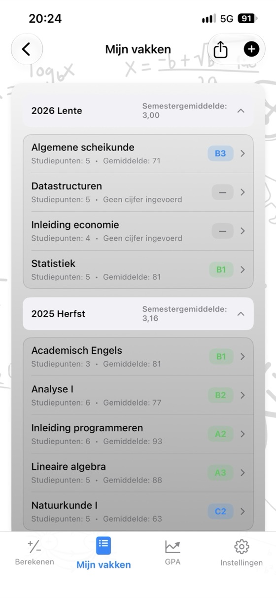
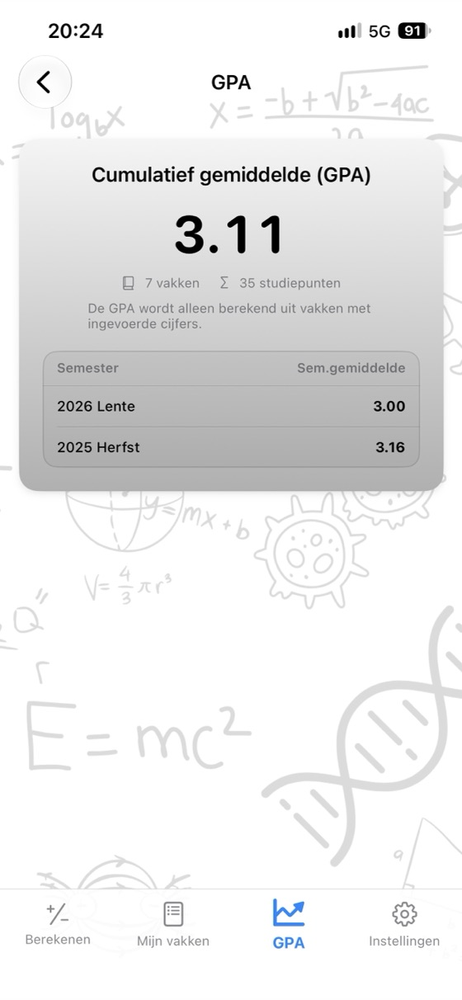
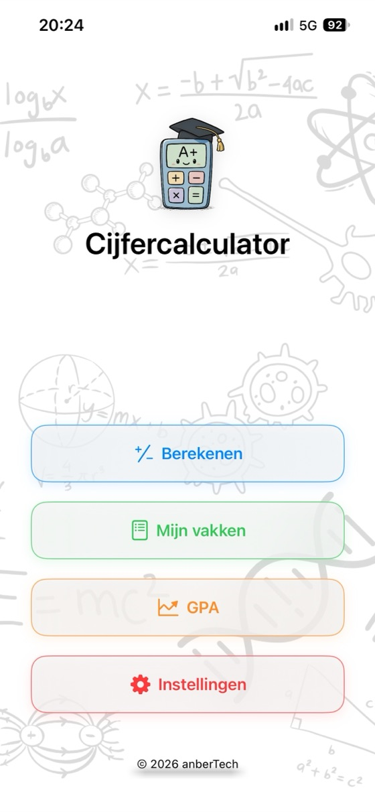
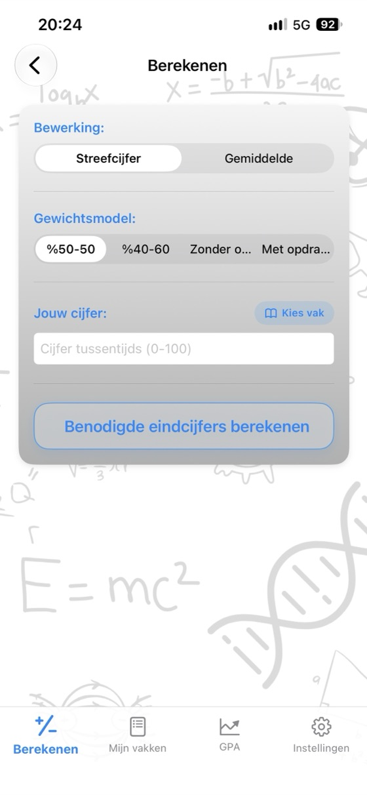
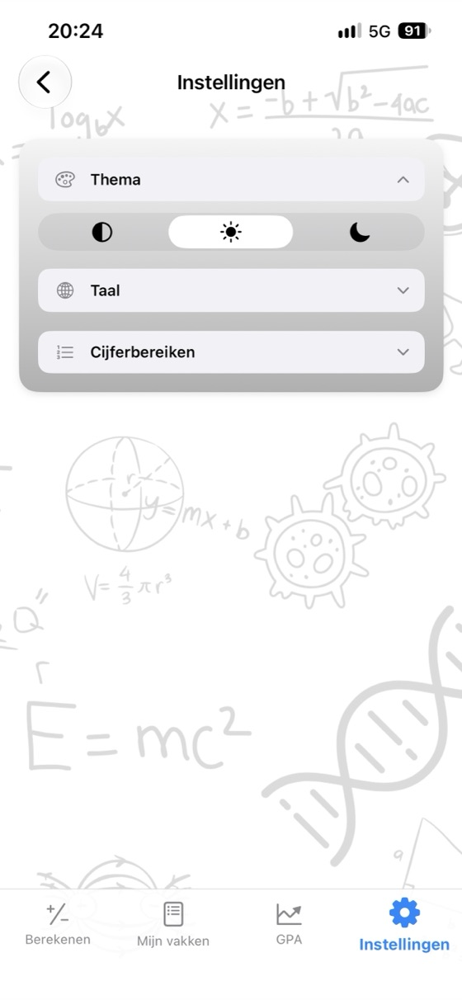

Weet waar je staat,
plan je toekomst.
Je vakgemiddelde, het benodigde cijfer voor je eindtentamen en je GPA in één app. Zonder advertenties of account, volledig offline.
- ✓ Gratis
- ✓ Geen advertenties
- ✓ Geen account
- ✓ Offline


Direct berekenen
Probeer het hier voordat je de app downloadt. Pas de waarden aan en je ziet meteen het resultaat.
Weging eindtentamen: 60%
Weging eindtentamen: 60%
Gratis rekentools
Gebruik ze in je browser zonder iets te downloaden. Je hoeft je niet te registreren en de cijfers die je invult blijven op je apparaat.
Waarom Cijfercalculator?
Vakgemiddelde
Vul de cijfers en wegingen van je tussentijdse tentamen, eindtentamen en opdracht in en zie meteen je gemiddelde en lettercijfer.
Benodigd eindcijfer
Bekijk op één scherm welk cijfer je minimaal voor je eindtentamen moet halen voor elk lettercijfer.
Je GPA bijhouden
Sla je vakken per semester op. Je semestergemiddelde en cumulatief gemiddelde (GPA) worden automatisch bijgewerkt.
Je eigen cijferschaal
Pas de grenzen voor lettercijfers en de bijbehorende punten aan de regels van je opleiding aan.
Cijferoverzicht als PDF
Deel je vakken en gemiddelde met één tik als PDF.
17 talen
Engels, Spaans, Duits, Japans, Arabisch, Turks en meer.
Privacy voorop
Geen account, geen advertenties en geen tracking. Je gegevens blijven op je apparaat.
Werkt offline
Geen internet nodig: in de tentamenweek, in de bibliotheek, overal.
Een kijkje in de app



Veelgestelde vragen
Hoe bereken ik mijn vakgemiddelde?
Vermenigvuldig elk cijfer met de bijbehorende weging en tel de uitkomsten op. Bij een tussentijds tentamen dat voor 40% meetelt en een eindtentamen dat voor 60% meetelt: gemiddelde = tussentijds tentamen × 0.40 + eindtentamen × 0.60. Met 62 voor het tussentijdse tentamen en 75 voor het eindtentamen krijg je 62 × 0.40 + 75 × 0.60 = 69.8. Heb je ook een opdracht? Tel dan ook het gewogen cijfer daarvan mee. De wegingen moeten samen 100% zijn.
Wat moet ik halen voor mijn eindtentamen om te slagen?
Benodigd eindcijfer = (gewenst gemiddelde − tussentijds tentamen × weging tussentijds tentamen) ÷ weging eindtentamen. Met 55 voor een tussentijds tentamen dat voor 40% meetelt en een vereist gemiddelde van 50: (50 − 22) ÷ 0.60 = 46.7. Je moet dus minstens 47 halen voor je eindtentamen. Cijfercalculator berekent dit in één keer voor elk lettercijfer.
Hoe wordt GPA berekend?
Vermenigvuldig de cijferpunten van elk vak (A = 4.0, B = 3.0 …) met het aantal studiepunten, tel de uitkomsten op en deel door het totale aantal studiepunten. Het resultaat is je gewogen cijfergemiddelde, oftewel GPA, op een schaal van 4.0.
Zijn de grenzen voor lettercijfers overal hetzelfde?
Nee. De cijfergrenzen en bijbehorende punten verschillen per land, universiteit en soms zelfs per vak. In de app kun je de cijferschaal precies afstemmen op die van jouw opleiding.
Wat is een minimumcijfer voor het eindtentamen?
Bij sommige opleidingen zak je als je cijfer voor het eindtentamen onder een bepaalde grens ligt (bijvoorbeeld 30, 45 of 50), ook als je gemiddelde hoog genoeg is. Vul het minimum in en de berekening van het benodigde eindcijfer houdt er rekening mee.
Is Cijfercalculator gratis?
Ja. De app is gratis verkrijgbaar in de App Store, zonder advertenties, abonnement of in-app aankopen. Ook de rekentools op deze site zijn gratis.
Waar worden mijn cijfers opgeslagen?
Alleen op je eigen apparaat. Je hebt geen account nodig en er wordt niets naar een server gestuurd. Cijfers die je in de online rekentools invult, blijven in je browser.
Is er een Android-versie?
De Android-versie is binnenkort beschikbaar op Google Play. De app is nu verkrijgbaar in de App Store voor iPhone en iPad (iOS 17.6 of hoger).
Houd al je vakken op één plek bij
Gratis. Geen advertenties. Geen account.